ER-COM-001 · 브란 오크펠나무꾼 · 46세 · 벨로아 W1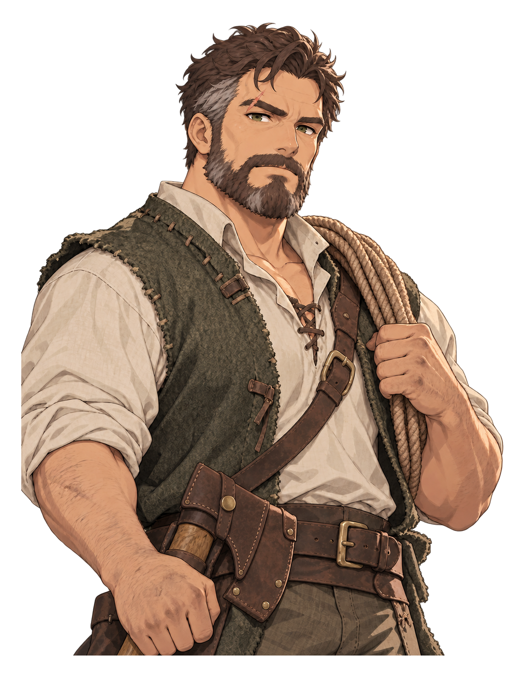초상화 · 1086×1448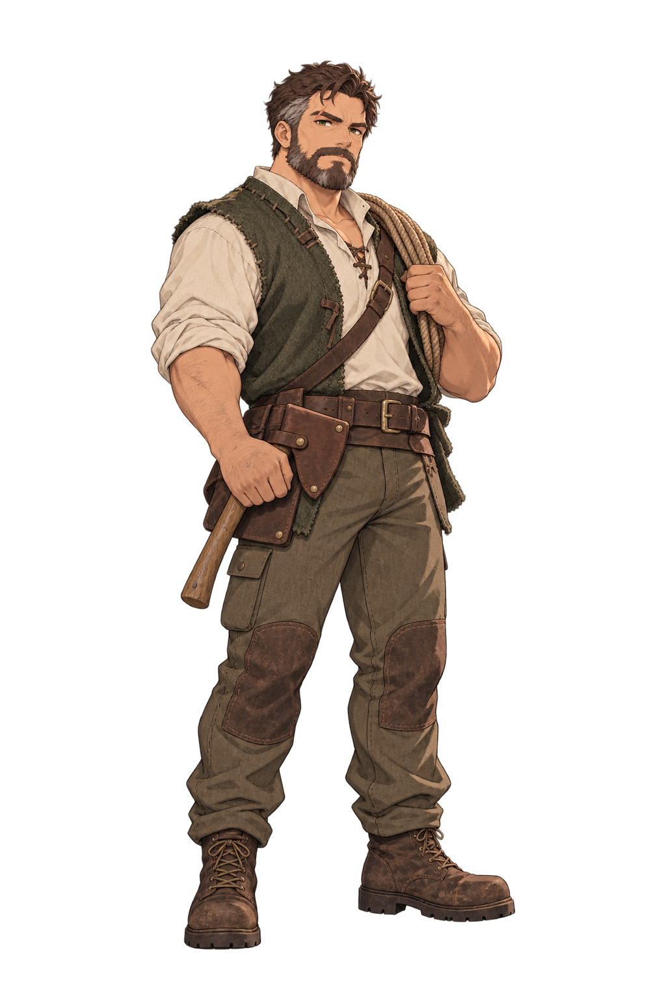전신 · 1024×1536원본 외형 지침182cm, 넓은 어깨와 굵은 팔, 거친 손과 오른쪽 눈썹의 작은 흉터.짙은 밤갈색 짧은 곱슬머리, 관자놀이에 회색, 짧고 넓은 턱수염.짙은 녹갈색, 눈꼬리가 조금 처지고 굵은 눈썹.거친 양모 조끼, 소매를 걷은 아마 셔츠, 가죽 허리띠, 무릎 보강 바지, 작업화.날을 덮은 벌목 도끼 · 어깨에 건 짧은 밧줄손·도끼를 얼굴 앞에 두지 않는다. 기사 갑옷이나 영지 문장을 붙이지 않는다.
ER-COM-002 · 마레나 펜농부 · 39세 · 벨로아 W3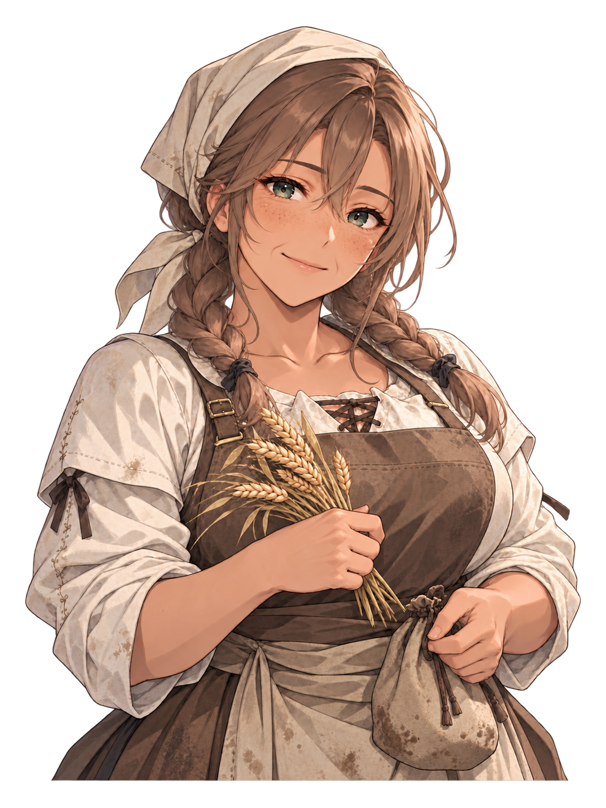초상화 · 1086×1448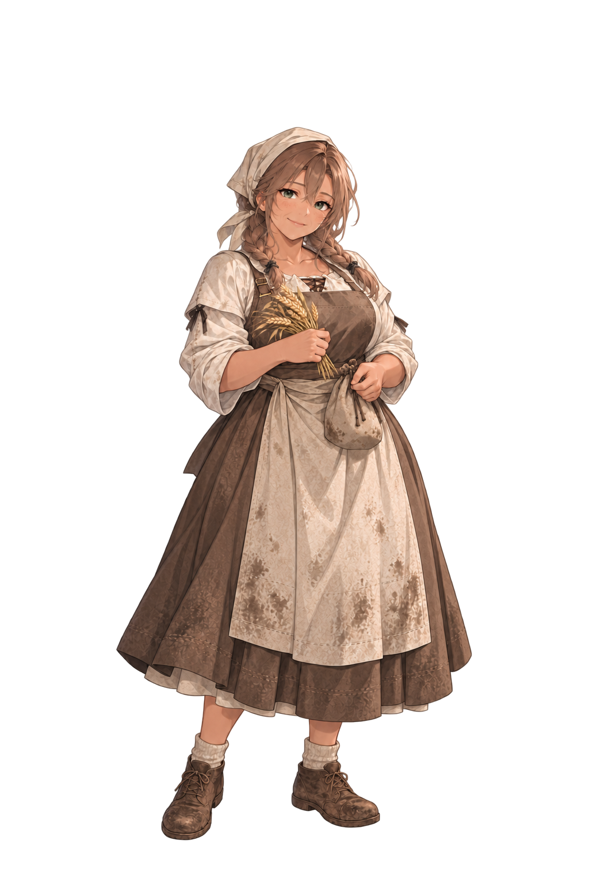전신 · 1024×1536원본 외형 지침165cm, 튼튼한 체형, 햇볕에 그을린 피부와 양 볼의 옅은 주근깨.밀빛 갈색 머리를 낮은 두 갈래 땋기로 묶고 바랜 천 두건을 쓴다.맑은 회녹색, 둥근 눈과 웃을 때 깊어지는 눈가 주름.두꺼운 아마 블라우스, 무릎 아래 갈색 치마, 넓은 작업 앞치마, 흙 묻은 가죽화.작은 밀 이삭 묶음 · 왼손의 씨앗 주머니밀 이삭은 가슴 아래에 둔다. 귀족 드레스나 과도한 장식을 피한다.
ER-COM-003 · 토렌 바크수레꾼 · 33세 · 벨로아 W3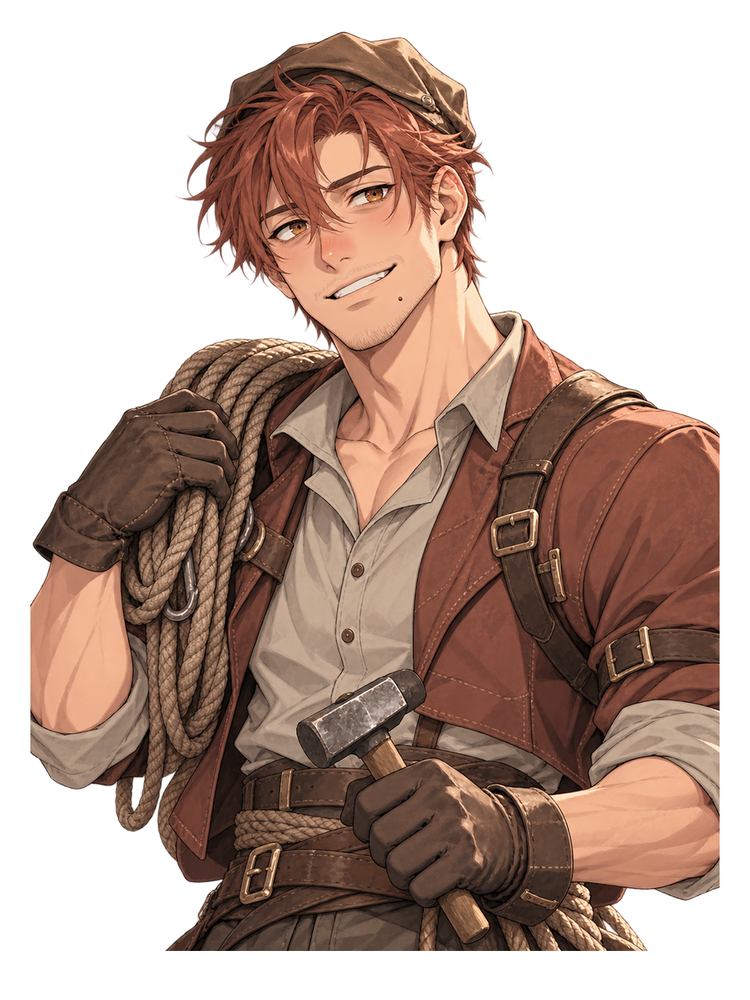초상화 · 1086×1448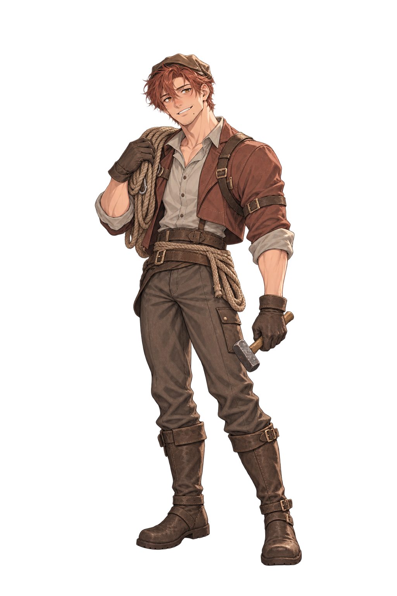전신 · 1024×1536원본 외형 지침176cm, 마른 근육형, 붉어진 코와 왼쪽 턱의 작은 점.붉은 갈색의 헝클어진 짧은 머리, 이마 위에 작은 갈색 천 모자.호박색, 피곤한 눈 아래 옅은 그늘.소매가 좁은 짧은 외투, 줄무늬 없는 셔츠, 짐 고정용 허리띠, 튼튼한 바지와 장화.감은 짐줄 · 목재 수레 바퀴 점검용 작은 망치수레 자체는 캐릭터 원화에 넣지 않는다. 밧줄과 망치만 소품으로 사용한다.
ER-COM-004 · 에다 클라인대장장이 조수 · 22세 · 벨로아 W2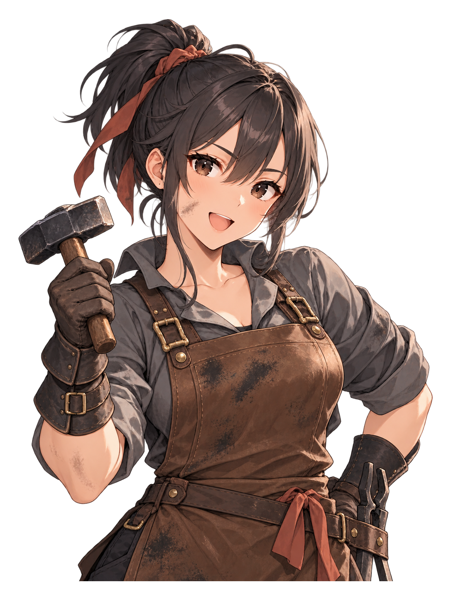초상화 · 1086×1448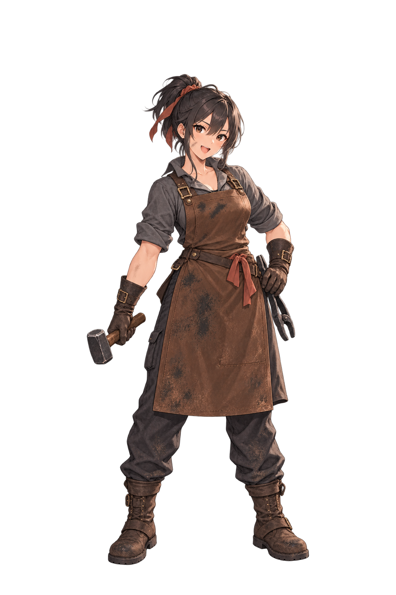전신 · 1024×1536원본 외형 지침169cm, 탄탄한 팔과 둥근 턱, 볼에 작은 검댕 얼룩.검은 머리를 높은 짧은 포니테일로 묶고 붉은 천 끈으로 고정.따뜻한 짙은 갈색, 집중할 때 눈썹을 모은다.질긴 회색 셔츠, 무릎 길이 가죽 앞치마, 팔목 보호대, 두꺼운 작업 바지와 가죽화.작은 대장장이 망치 · 허리에 꽂은 집게불꽃과 모루는 제외한다. 조수의 실용 복장을 유지하고 명장 휘장을 만들지 않는다.
ER-COM-005 · 오스벤 밀러빵집 주인 · 51세 · 벨로아 W3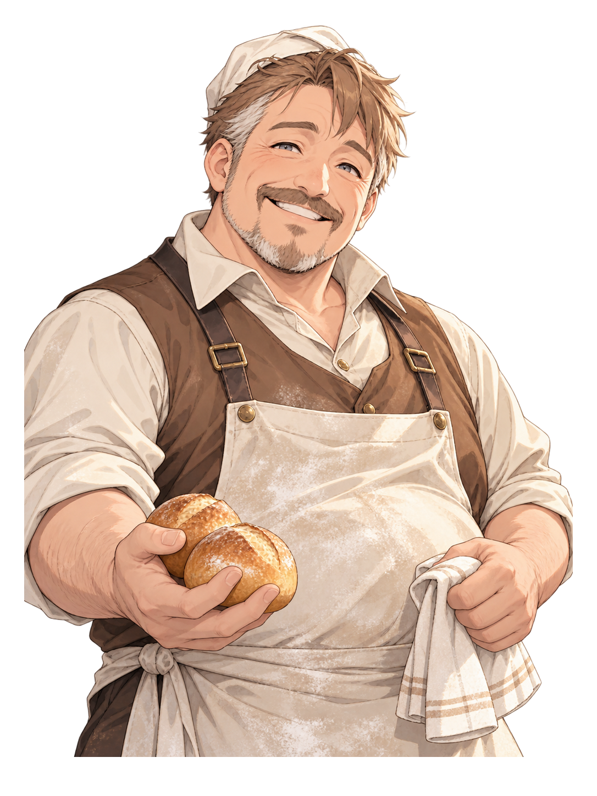초상화 · 1086×1448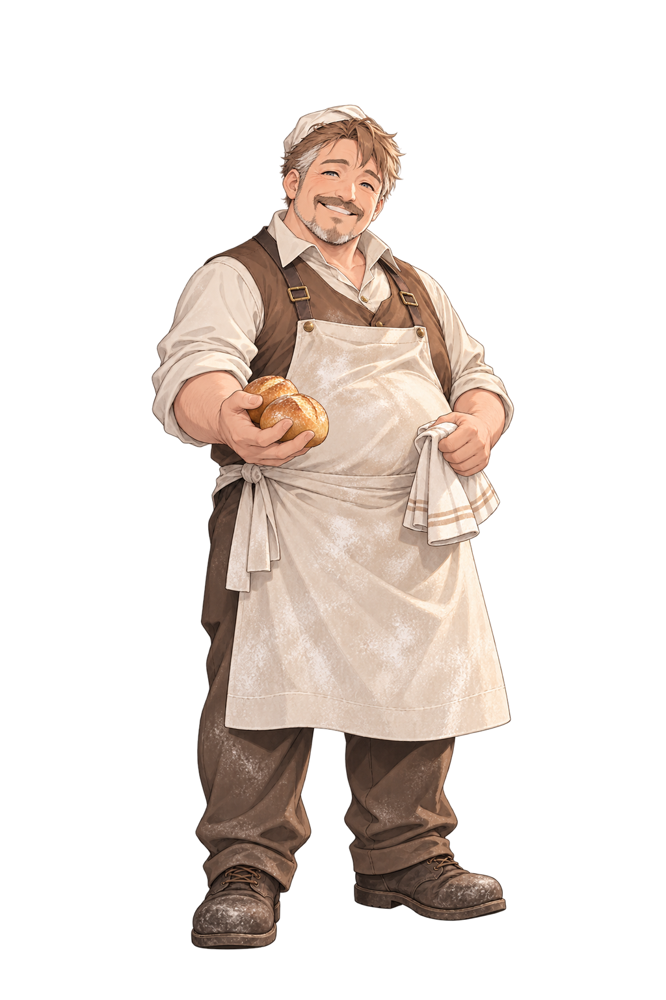전신 · 1024×1536원본 외형 지침173cm, 둥근 배와 두꺼운 손, 웃을 때 볼에 깊은 주름.밝은 갈색 짧은 머리에 흰머리가 섞임, 작은 흰 천 작업 모자.옅은 청회색, 잘 웃는 반달형 눈.크림색 셔츠, 갈색 조끼, 밀가루 묻은 긴 앞치마, 편한 작업 바지.작은 둥근 빵 두 개 · 접은 주방 수건빵과 수건은 허리 높이에 둔다. 실제 상호나 간판을 새로 확정하지 않는다.
ER-COM-006 · 리네트 모어양치기 · 28세 · 벨로아 W5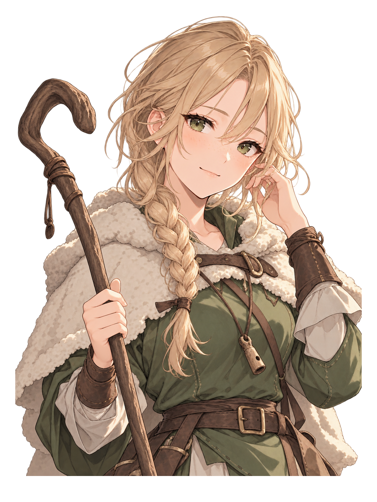초상화 · 1086×1448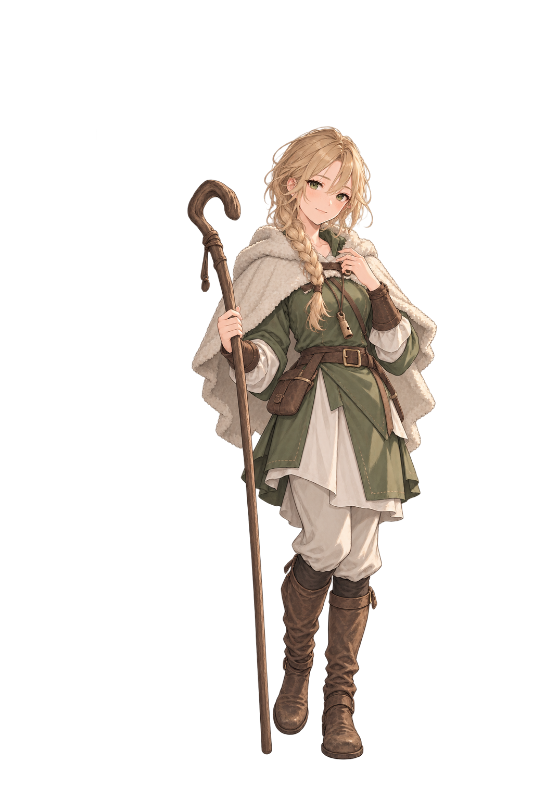전신 · 1024×1536원본 외형 지침162cm, 작고 날렵한 체형, 코 위의 옅은 주근깨.모래빛 금발을 한 갈래로 땋아 어깨 앞으로 넘김, 잔머리가 많다.밝은 올리브색, 눈매가 길고 부드럽다.짧은 양모 어깨 망토, 풀색 튜닉, 무릎까지 오는 치마 바지, 낡은 장화.구부러진 목재 양치기 지팡이 · 작은 목제 호루라기양과 목초지는 배경에 넣지 않는다. 지팡이 끝은 얼굴과 겹치지 않게 한다.
ER-COM-007 · 시그나 론사냥꾼 · 35세 · 벨로아 W1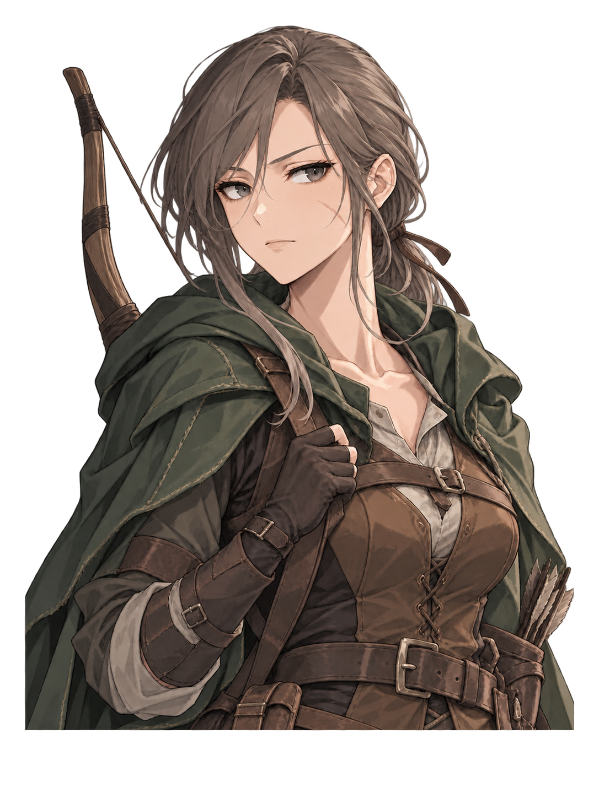초상화 · 1086×1448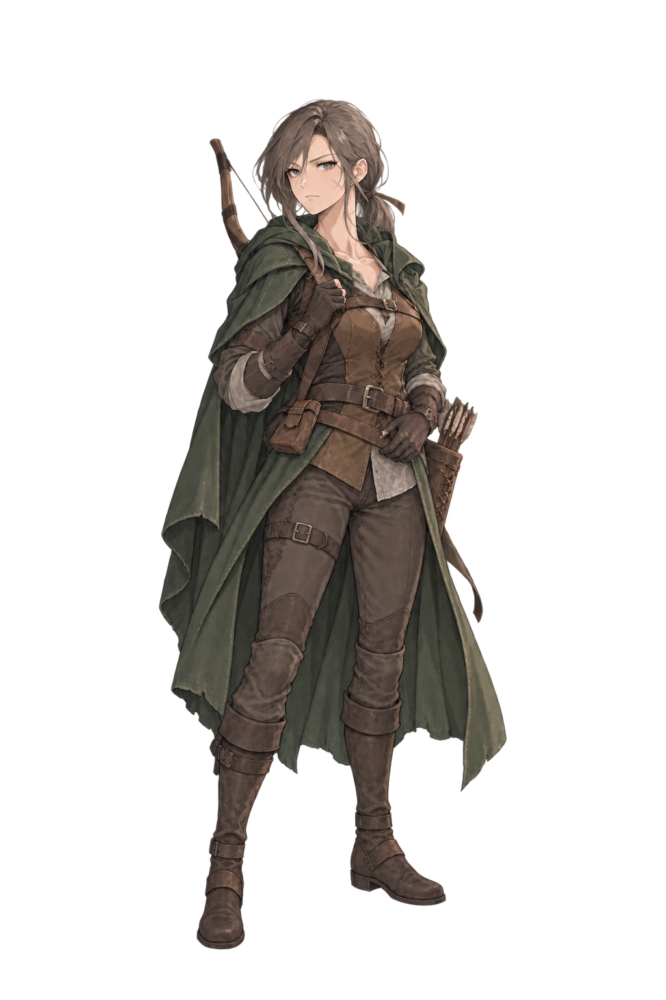전신 · 1024×1536원본 외형 지침174cm, 긴 팔과 날렵한 어깨, 왼쪽 볼의 옅은 긁힌 자국.짙은 회갈색 머리를 목덜미에서 단단히 묶음, 앞머리는 옆으로 넘긴다.짙은 회색, 가늘고 경계심 있는 눈매.바랜 녹색 후드 외투, 갈색 가죽 조끼, 무릎 보강 바지, 조용한 밑창의 장화.등에 멘 평범한 목재 활 · 허리의 작은 화살통전투 능력이나 특별한 사냥 경지를 시각적으로 암시하지 않는다. 후드는 뒤로 내린다.
ER-COM-008 · 페릭 하웬세금 징수 보조관 · 29세 · 벨로아 W4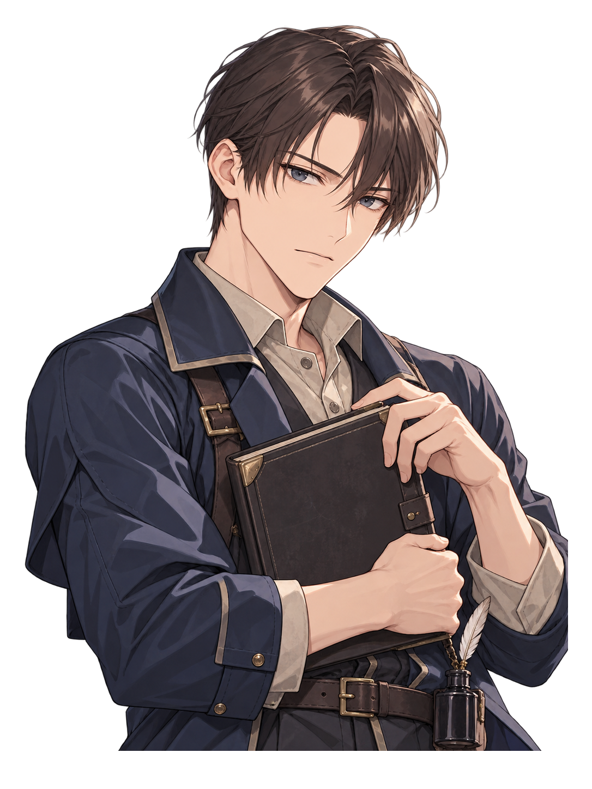초상화 · 1086×1448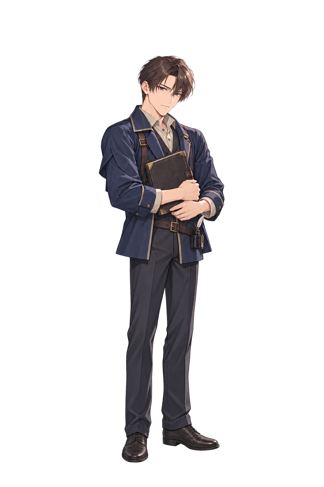전신 · 1024×1536원본 외형 지침171cm, 마른 체형, 가는 입술과 긴 손가락.짙은 갈색 곧은 머리, 단정한 옆가르마, 수염 없음.회청색, 작고 집중한 눈매.남색 짧은 사무 외투, 아마색 셔츠, 단순한 허리띠, 곧은 바지와 낮은 가죽화.닫힌 장부 · 허리에 단 작은 잉크병과 깃펜왕실 인장·새 관청 문장을 추가하지 않는다. 장부에 읽을 수 있는 개인정보를 넣지 않는다.
ER-COM-009 · 도르만 켈광부 · 44세 · 드라켄 E1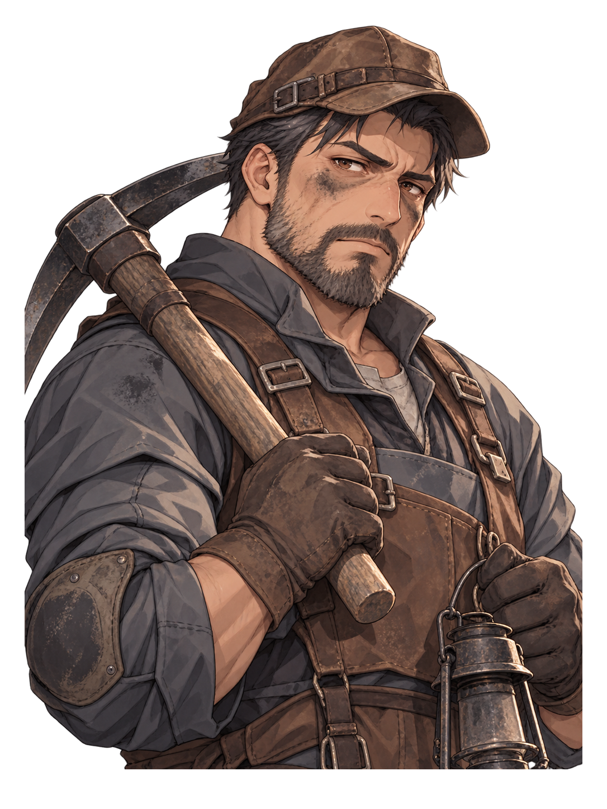초상화 · 1086×1448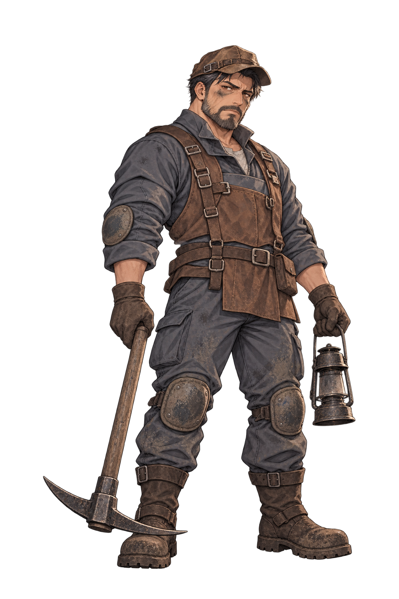전신 · 1024×1536원본 외형 지침179cm, 두꺼운 목과 넓은 손, 눈 아래의 검은 먼지 흔적.검은 짧은 머리에 회색이 섞임, 짧은 수염과 낡은 가죽 작업 모자.진한 갈색, 깊게 들어간 눈과 무거운 눈꺼풀.두꺼운 회색 작업복, 갈색 가죽 조끼, 팔꿈치 보강, 무릎 보호대와 튼튼한 장화.일반 곡괭이 · 작은 덮개 달린 기름등마나 수정이나 발광 마도 장치를 임의로 추가하지 않는다. 기름등은 꺼진 상태.
ER-COM-010 · 베라 노트약초채집꾼 · 31세 · 드라켄 E4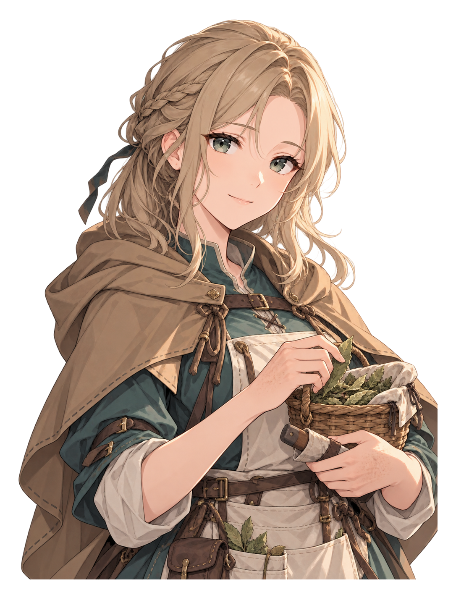초상화 · 1086×1448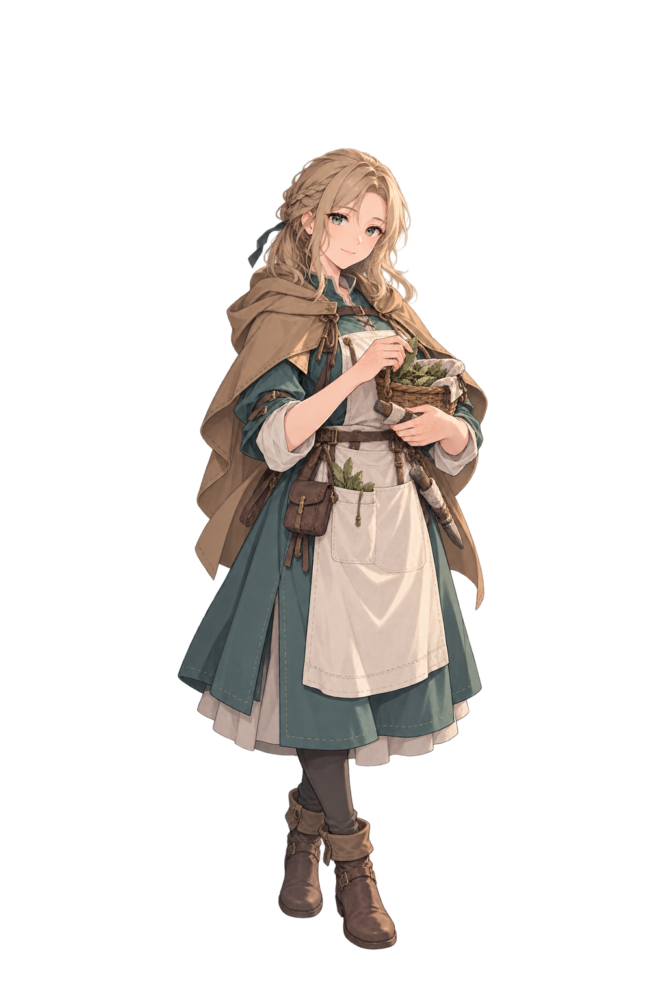전신 · 1024×1536원본 외형 지침164cm, 가는 체형, 둥근 코와 햇볕 자국이 있는 손등.어두운 금발의 어깨 길이 머리, 양옆을 얇게 땋아 뒤로 묶음.옅은 녹회색, 둥글고 차분한 눈매.연갈색 후드 망토, 청록색 튜닉, 작은 주머니가 달린 앞치마, 발목 장화.말린 잎이 든 작은 바구니 · 천으로 감싼 평범한 채집 칼약초는 일반 잎 형태로 그린다. 희귀 효능이나 마법 입자를 암시하지 않는다.
ER-COM-011 · 니카 펠트전령 · 24세 · 드라켄 E3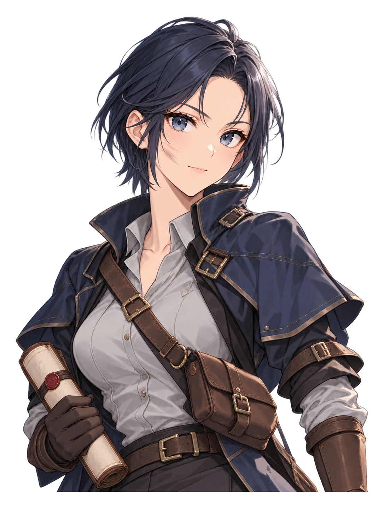초상화 · 1086×1448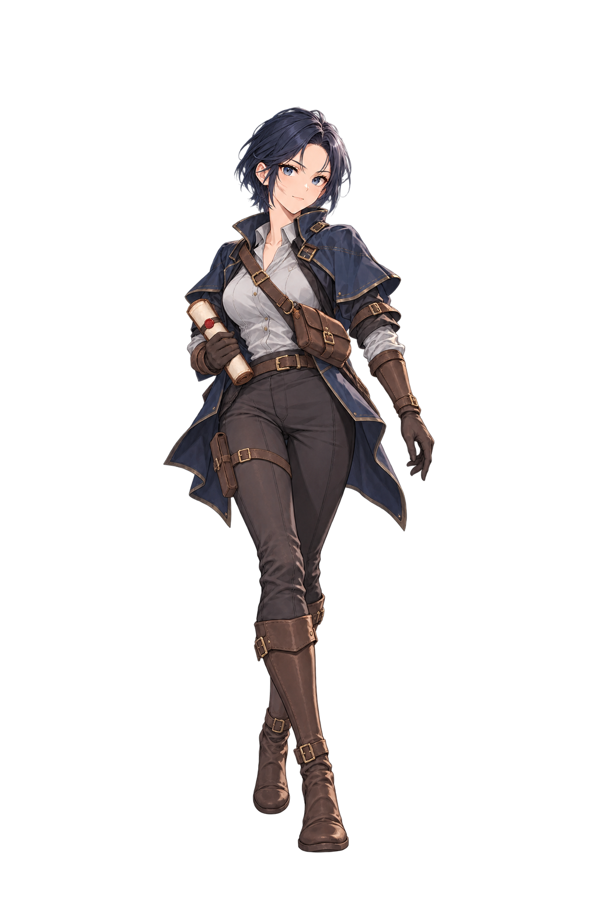전신 · 1024×1536원본 외형 지침170cm, 긴 다리와 날렵한 체형, 얼굴에 옅은 바람 자국.검청색 짧은 머리, 귀 뒤로 넘긴 앞머리와 짧은 뒷머리.맑은 회청색, 시선이 또렷하다.짧은 남색 여행 외투, 밝은 회색 셔츠, 좁은 바지, 종아리 가죽 각반.밀봉된 문서 통 · 가슴을 가로지르는 작은 가죽 가방문서의 내용과 군사 기밀은 보이지 않게 한다. 새 군부대 문장을 붙이지 않는다.
ER-COM-012 · 울브릭 타너창고 관리인 · 57세 · 드라켄 E2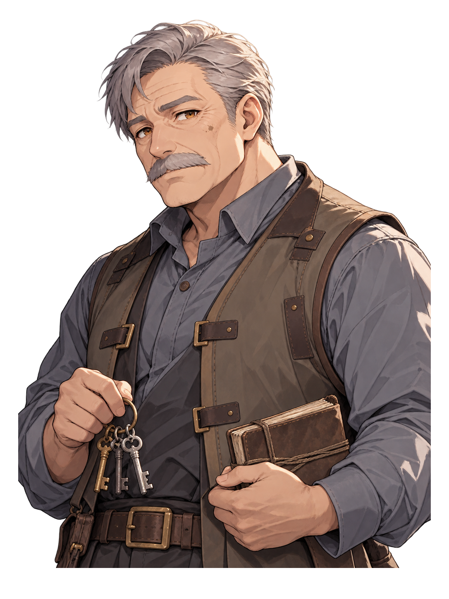초상화 · 1086×1448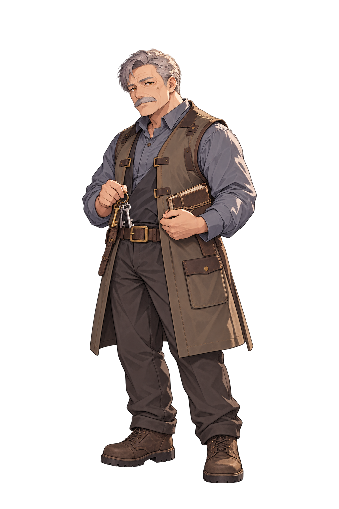전신 · 1024×1536원본 외형 지침175cm, 굽은 어깨와 굵은 허리, 오른쪽 볼의 작은 검버섯.회색 머리를 짧게 빗어 넘김, 정돈된 회색 콧수염.짙은 호박색, 눈가에 깊은 주름.회갈색 긴 조끼, 두꺼운 회색 셔츠, 튼튼한 바지, 가죽 허리띠와 작업화.열쇠 세 개가 달린 고리 · 줄로 묶은 재고 수첩열쇠와 수첩을 얼굴 아래에 배치한다. 왕실 금고 관리자로 묘사하지 않는다.
ER-COM-013 · 멜리사 베크상인 · 42세 · 드라켄 E2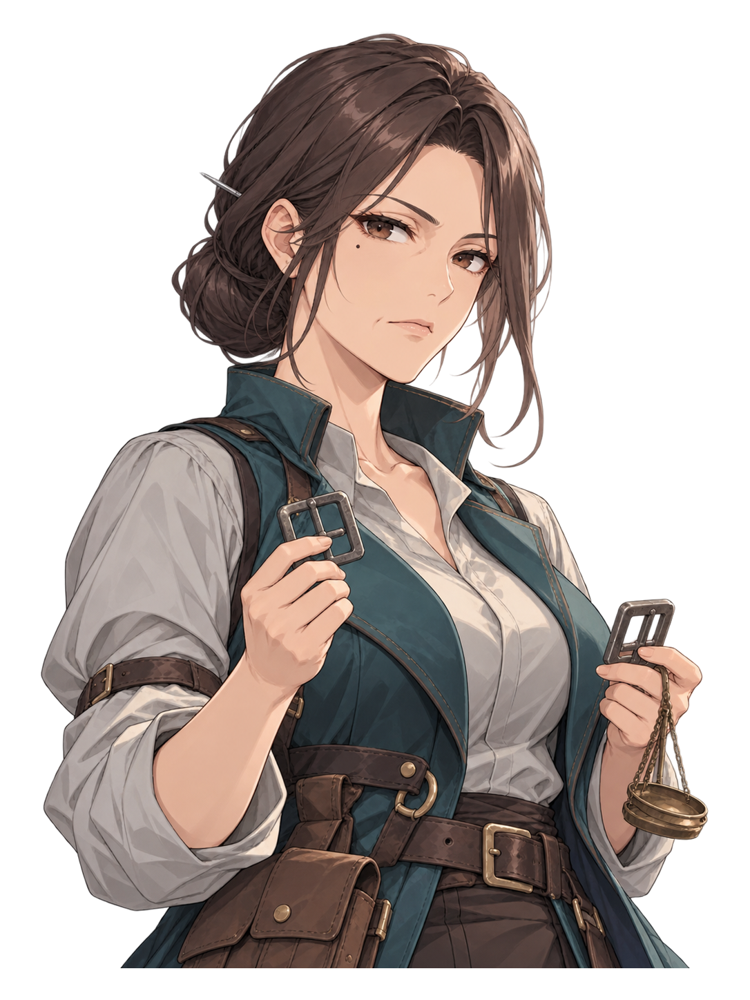초상화 · 1086×1448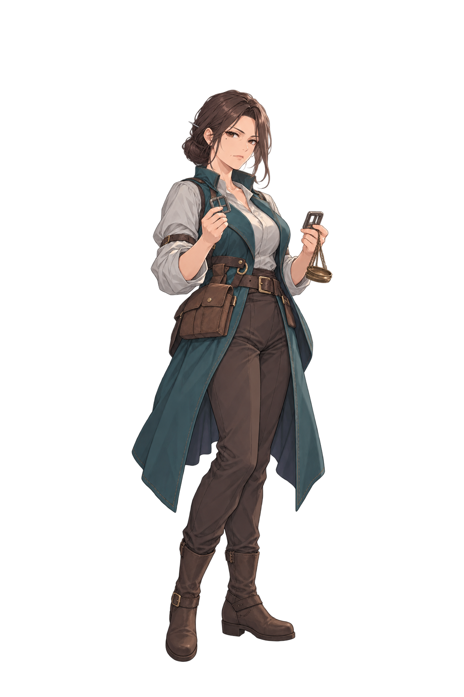전신 · 1024×1536원본 외형 지침168cm, 단단한 체형, 높은 광대와 오른쪽 눈 밑 작은 점.검갈색 머리를 낮은 둥근 쪽머리로 고정, 얇은 은색 머리핀 하나.차가운 갈색, 눈매가 길고 집중되어 있다.청록색 긴 조끼, 회백색 셔츠, 짙은 바지, 단순한 허리 주머니와 가죽화.보통 철제 버클 견본 두 개 · 작은 접이식 저울유명 상단 문장이나 귀족 보석을 추가하지 않는다. 견본은 일반 잡화로 표현한다.
ER-COM-014 · 라덴 크로스용병 · 36세 · 드라켄 E3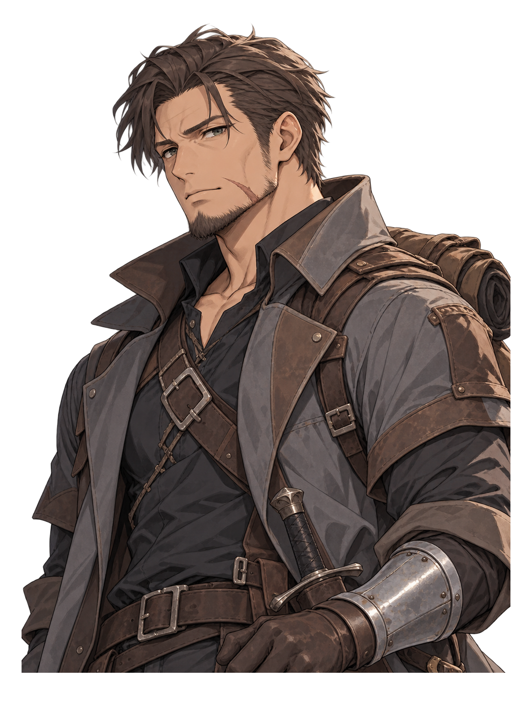초상화 · 1086×1448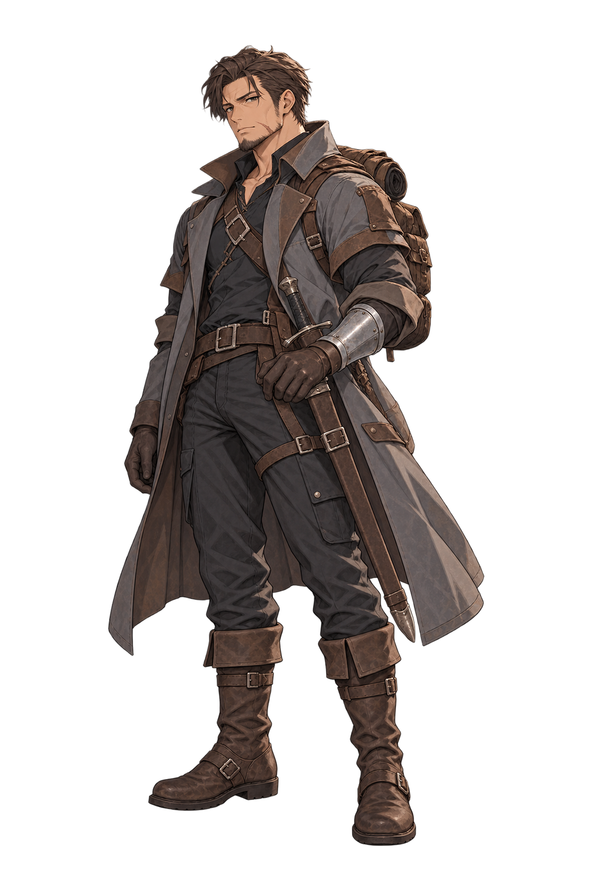전신 · 1024×1536원본 외형 지침184cm, 탄탄한 체형, 왼쪽 입가의 오래된 흉터와 넓은 턱.짙은 갈색 짧은 머리, 뒤로 넘긴 앞머리와 짧은 턱수염.회녹색, 지친 듯하지만 흔들리지 않는 눈매.가죽 덧댄 회색 외투, 평범한 쇠 팔목 보호대, 짙은 바지와 낡은 장화.칼집에 든 평범한 장검 · 작은 여행 배낭기사단 문장·고유능력 효과·경지 표식을 넣지 않는다. 전투 수치는 미지정이다.
ER-COM-015 · 사비나 리드도적 · 27세 · 드라켄 E4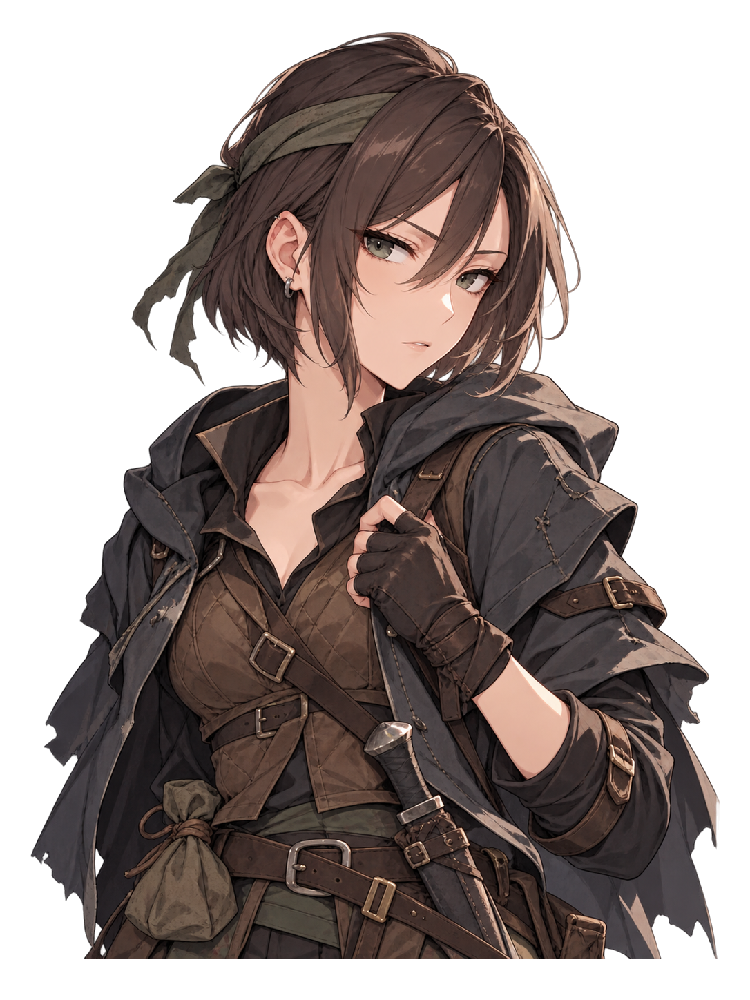초상화 · 1086×1448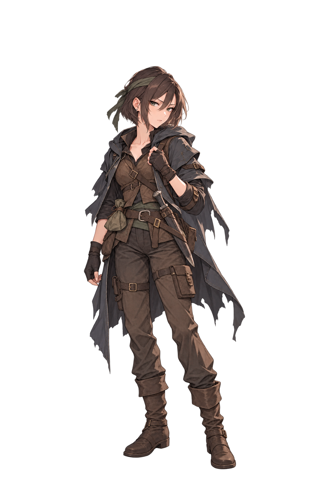전신 · 1024×1536원본 외형 지침167cm, 마른 체형, 왼쪽 귀의 작은 찢어진 흔적.어두운 갈색의 턱 길이 머리, 비대칭 앞머리와 낡은 천 머리띠.짙은 회녹색, 가늘고 주변을 살피는 눈.바랜 짙은 회색 후드 외투, 갈색 누비 조끼, 주머니 많은 바지와 부드러운 장화.작은 칼집에 든 단검 · 매듭지은 빈 천 주머니후드는 뒤로 내려 얼굴이 보이게 한다. 해골 문장·비밀 조직 표식·마왕 연관을 만들지 않는다.
ER-COM-016 · 그레타 슈멜광부 · 48세 · 드라켄 E2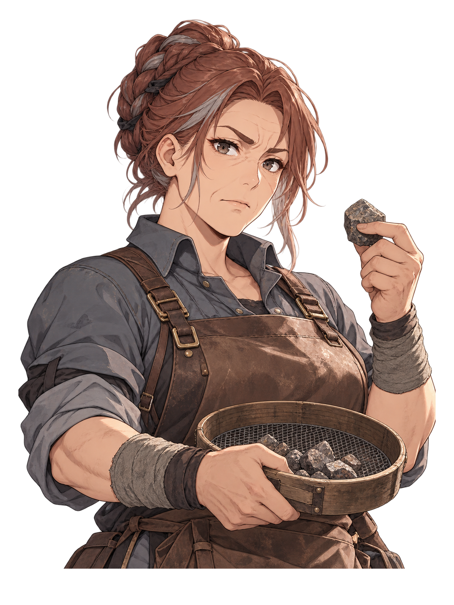초상화 · 1086×1448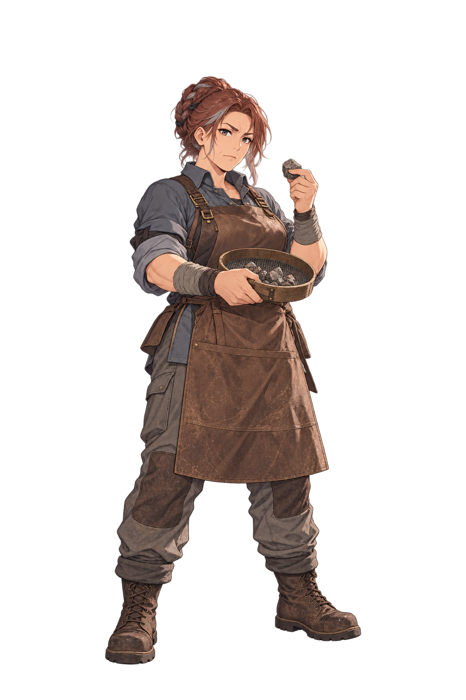전신 · 1024×1536원본 외형 지침172cm, 넓은 어깨와 튼튼한 손목, 깊은 미간 주름.적갈색 머리에 회색이 섞인 굵은 땋은 머리를 둥글게 말아 고정.갈회색, 두꺼운 눈썹과 또렷한 시선.질긴 남회색 작업 셔츠, 넓은 가죽 앞치마, 손목 천 보호대와 무릎 보강 바지.작은 선광 체 · 평범한 암석 두 조각원석은 보통 암석으로 그린다. 귀한 마나 수정이나 자동 채굴 장치를 추가하지 않는다.
ER-COM-017 · 헤르몬 솔트어부 · 53세 · 루메린 S1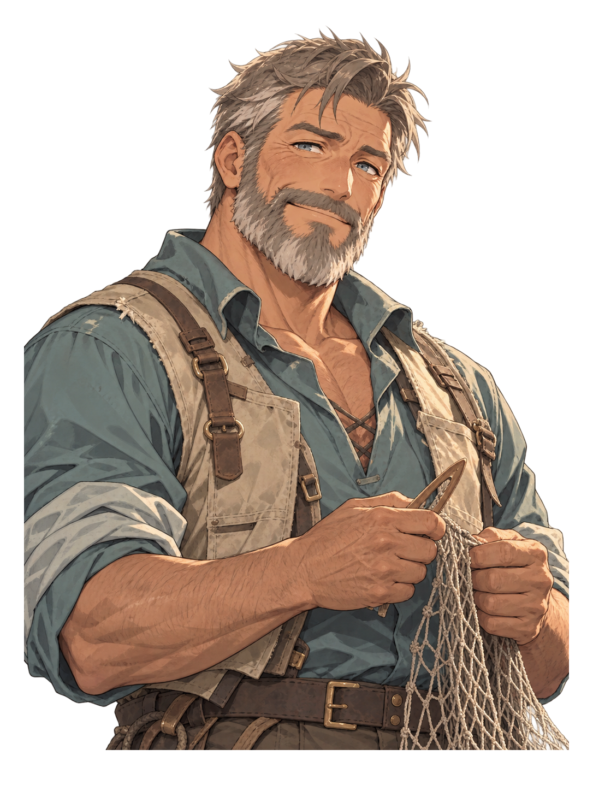초상화 · 1086×1448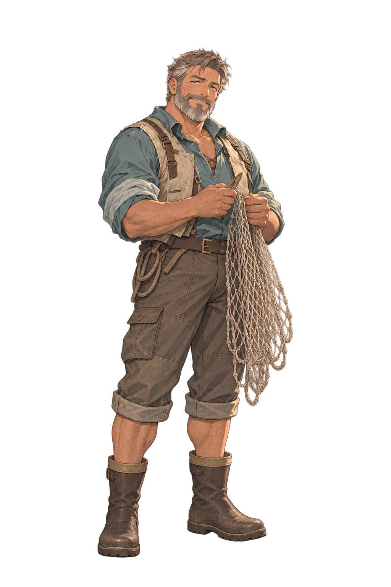전신 · 1024×1536원본 외형 지침178cm, 넓은 가슴과 거친 손, 깊게 그을린 피부와 웃음 주름.햇볕에 바랜 회갈색 짧은 머리, 숱 많은 회색 수염.밝은 청회색, 웃을 때 가늘어지는 눈.바랜 청록색 셔츠, 질긴 베이지 조끼, 무릎 길이 작업 바지와 방수 가죽화.손에 감은 작은 그물 · 목재 그물 바늘바다·배·물고기 떼는 넣지 않는다. 그물은 얼굴을 덮지 않게 한다.
ER-COM-018 · 루치오 마렌상인 · 38세 · 루메린 S2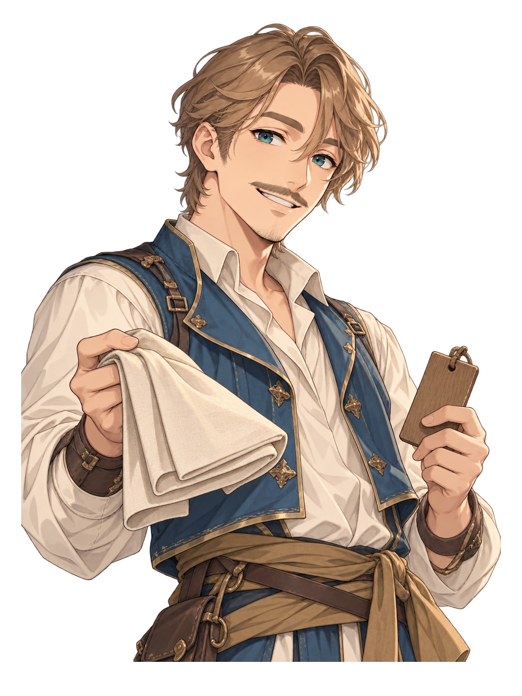초상화 · 1086×1448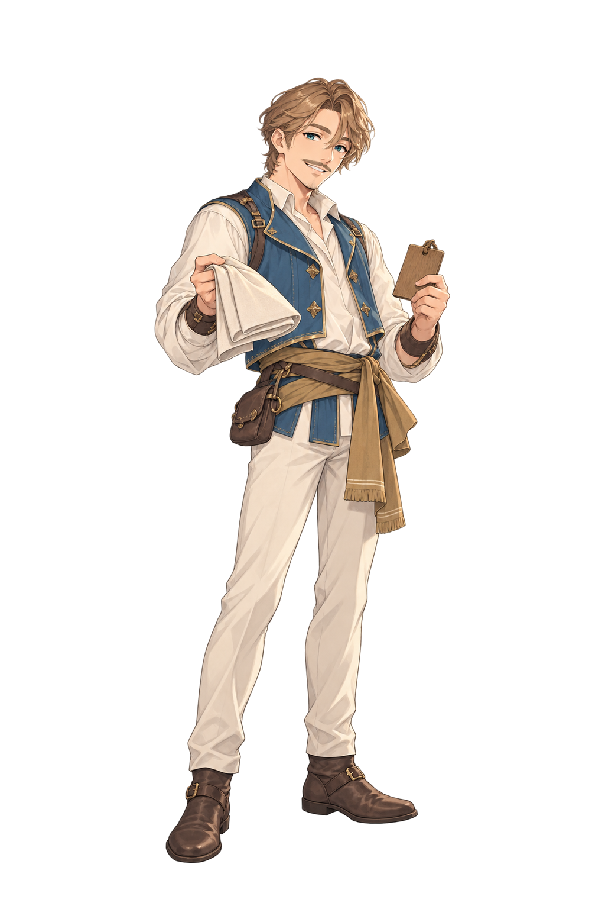전신 · 1024×1536원본 외형 지침177cm, 날씬한 체형, 둥근 눈썹과 작은 콧수염.꿀갈색 물결 머리, 귀를 덮지 않는 길이와 단정한 옆가르마.청록색, 눈빛이 밝고 표정 변화가 크다.청금색 짧은 조끼, 크림색 셔츠, 통이 넓지 않은 바지, 얇은 천 허리띠.접은 무늬 없는 천 견본 · 작은 목재 가격판가격판에는 특정 금액이나 읽을 수 있는 상호를 넣지 않는다. 유명 상단 소속으로 표현하지 않는다.
ER-COM-019 · 이레나 비올악사 · 26세 · 루메린 S4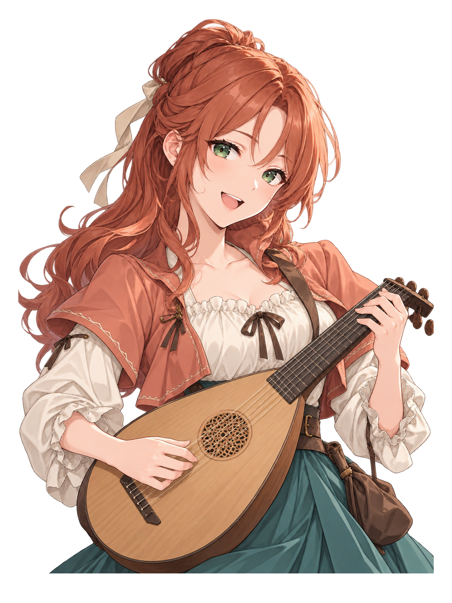초상화 · 1086×1448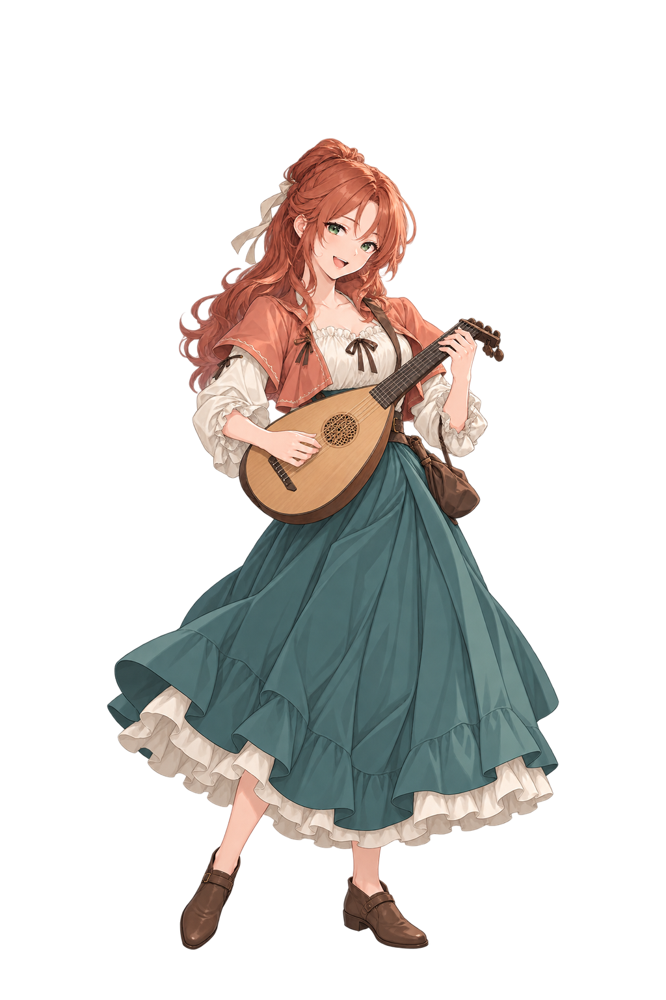전신 · 1024×1536원본 외형 지침166cm, 유연하고 가벼운 체형, 오른쪽 볼의 작은 보조개.구리빛 붉은 머리, 어깨 아래 물결을 반쯤 묶고 짧은 옆머리를 남긴다.맑은 녹색, 눈꼬리가 부드럽게 올라간다.산호색 짧은 겉옷, 아이보리 블라우스, 청록색 긴 치마와 낮은 가죽화.소형 목재 류트 · 허리의 무늬 없는 천 주머니악기는 얼굴 아래에 둔다. 마법 음표·왕실 음악가 휘장을 추가하지 않는다.
ER-COM-020 · 테오 파르재봉사 · 45세 · 루메린 S3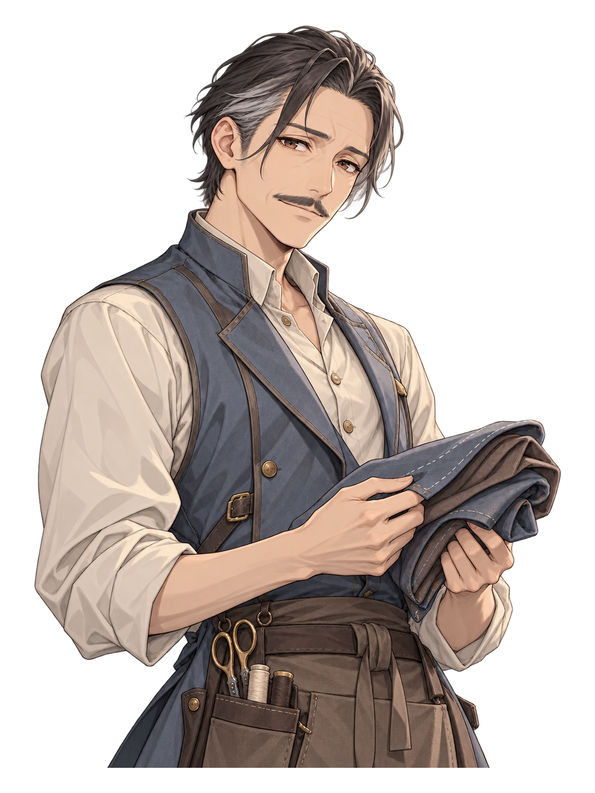초상화 · 1086×1448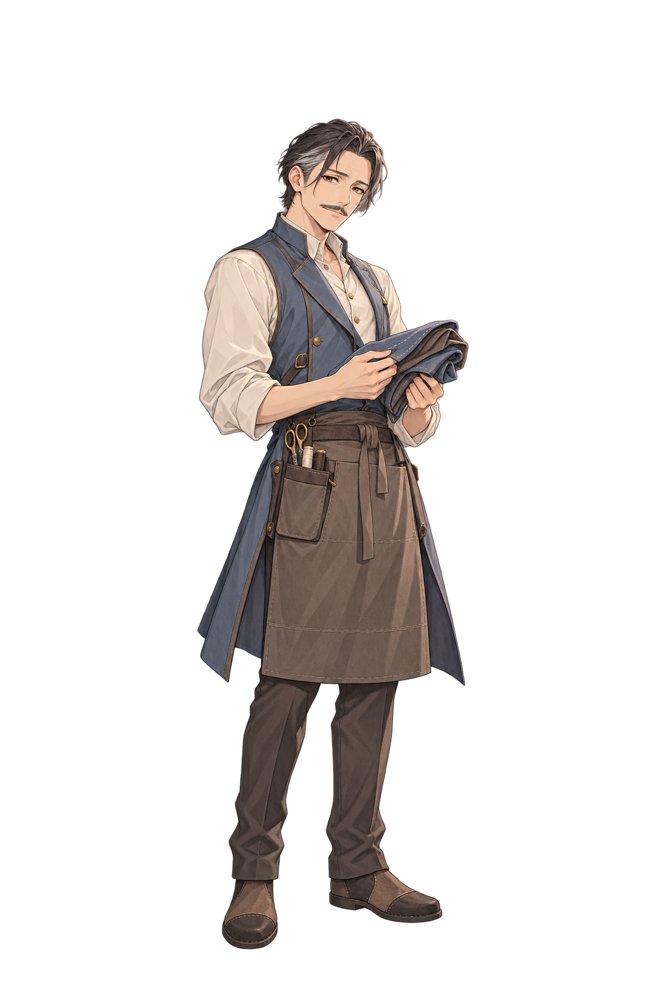전신 · 1024×1536원본 외형 지침170cm, 가는 체형, 긴 손가락과 가늘고 정돈된 콧수염.검은 머리에 옅은 회색이 섞임, 단정한 귀 뒤 넘김과 짧은 뒷머리.어두운 갈색, 부드러운 눈꺼풀과 집중한 시선.회청색 긴 조끼, 흰빛 아마 셔츠, 허리 앞치마, 곧은 바지와 천 덧댄 신발.접은 재단용 천 · 허리에 단 작은 가위와 실패바늘을 얼굴 가까이 들지 않는다. 새 길드 표식을 추가하지 않는다.
ER-COM-021 · 미라 엔델여관 종업원 · 23세 · 루메린 S4초상화 · 1086×1448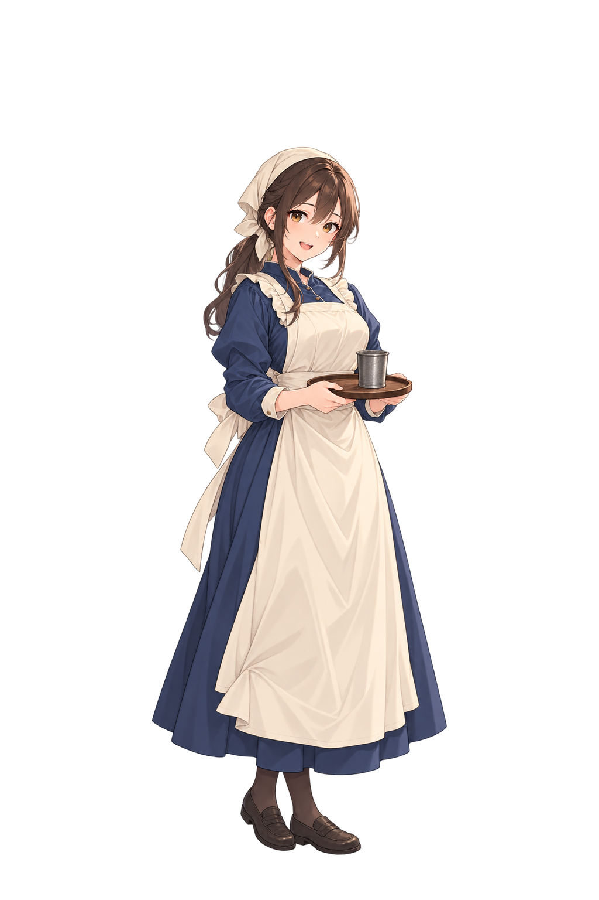전신 · 1024×1536원본 외형 지침161cm, 작고 균형 잡힌 체형, 둥근 얼굴과 코 옆 작은 점.짙은 밤색 머리를 낮은 포니테일로 묶고 좁은 크림색 머릿수건 착용.따뜻한 호박색, 둥근 눈과 부드러운 눈썹.남청색 단정한 원피스, 크림색 긴 앞치마, 긴 소매와 편한 검갈색 신발.허리 높이의 작은 목재 쟁반 · 평범한 주석 잔 하나과도한 노출이나 현대식 하녀복을 피한다. 실제 여관 이름을 새로 정하지 않는다.
ER-COM-022 · 알데르 바인농부 · 41세 · 루메린 S3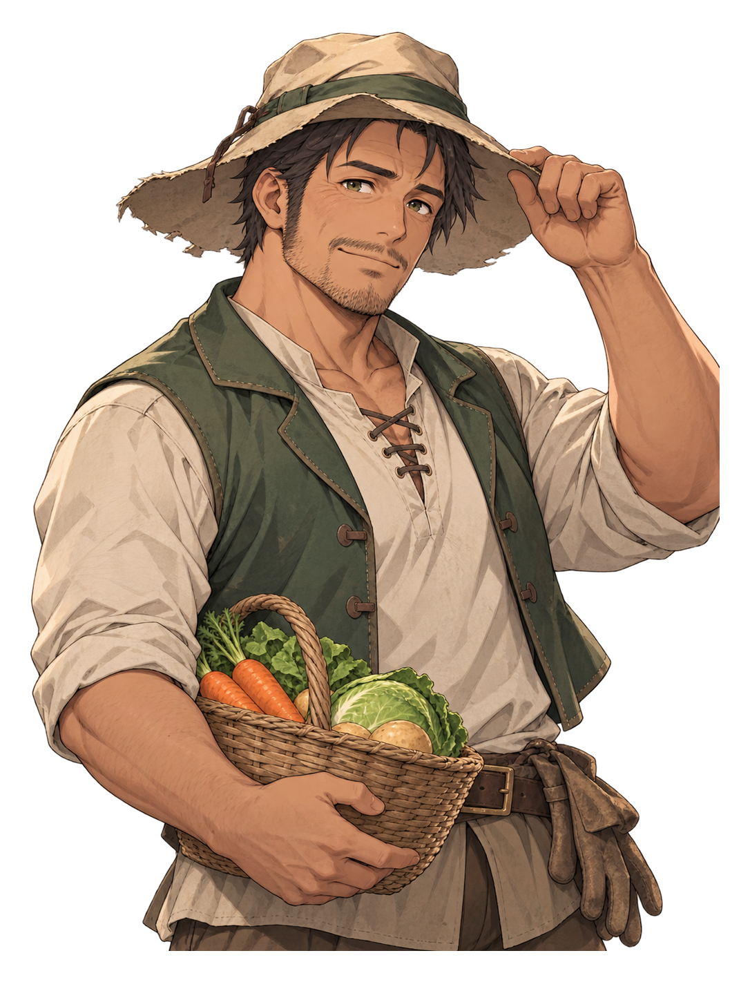초상화 · 1086×1448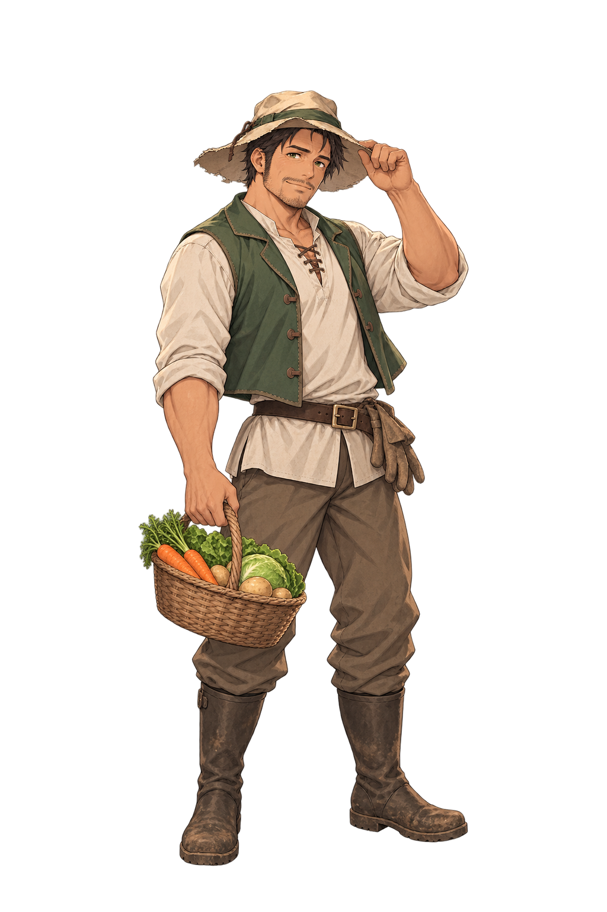전신 · 1024×1536원본 외형 지침174cm, 다부진 체형, 짙게 그을린 얼굴과 굵은 손.검갈색 짧은 머리, 바랜 넓은 천 모자와 짧은 구레나룻.짙은 녹갈색, 눈가가 깊고 시선이 온화하다.옅은 베이지 튜닉, 짙은 녹색 짧은 조끼, 무릎까지 오는 작업 바지와 장화.작은 채소 바구니 · 허리의 평범한 작업 장갑채소는 일상 작물로 그린다. 희귀 작물이나 마법 재배를 암시하지 않는다.
ER-COM-023 · 셀다 네트어부 · 34세 · 루메린 S2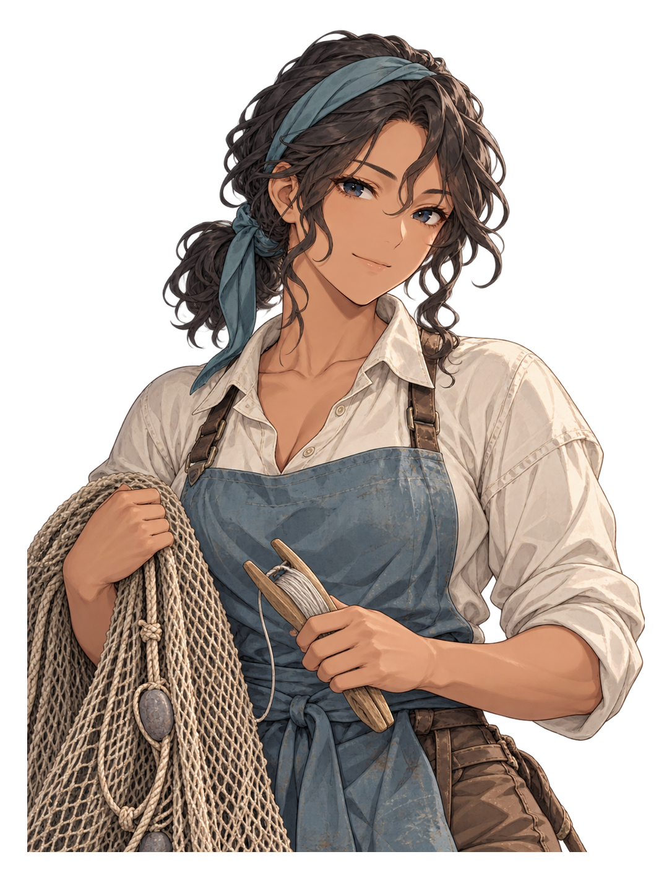초상화 · 1086×1448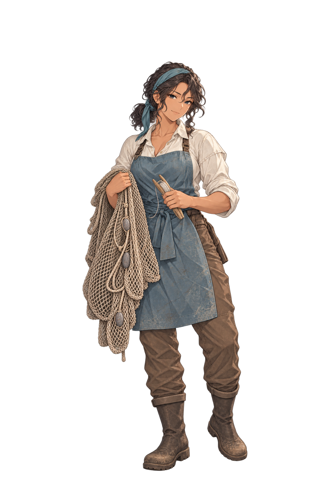전신 · 1024×1536원본 외형 지침169cm, 탄탄한 어깨와 팔, 햇볕에 바랜 피부와 짧은 손톱.검은 곱슬머리를 목덜미의 낮은 묶음으로 정리, 청록색 천 머리띠.진한 청갈색, 눈매가 길고 집중되어 있다.아이보리 작업 셔츠, 바랜 청색 허리 앞치마, 튼튼한 갈색 바지와 짧은 장화.접은 그물 · 작은 목재 실 감개신체와 그물의 경계를 명확하게 한다. 바다 배경이나 왕실 해군 복장을 넣지 않는다.
ER-COM-024 · 노엘 스카도적 · 30세 · 루메린 S1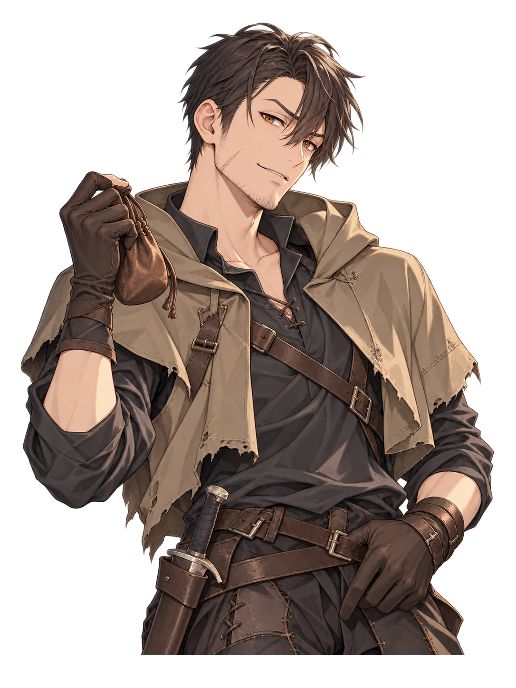초상화 · 1086×1448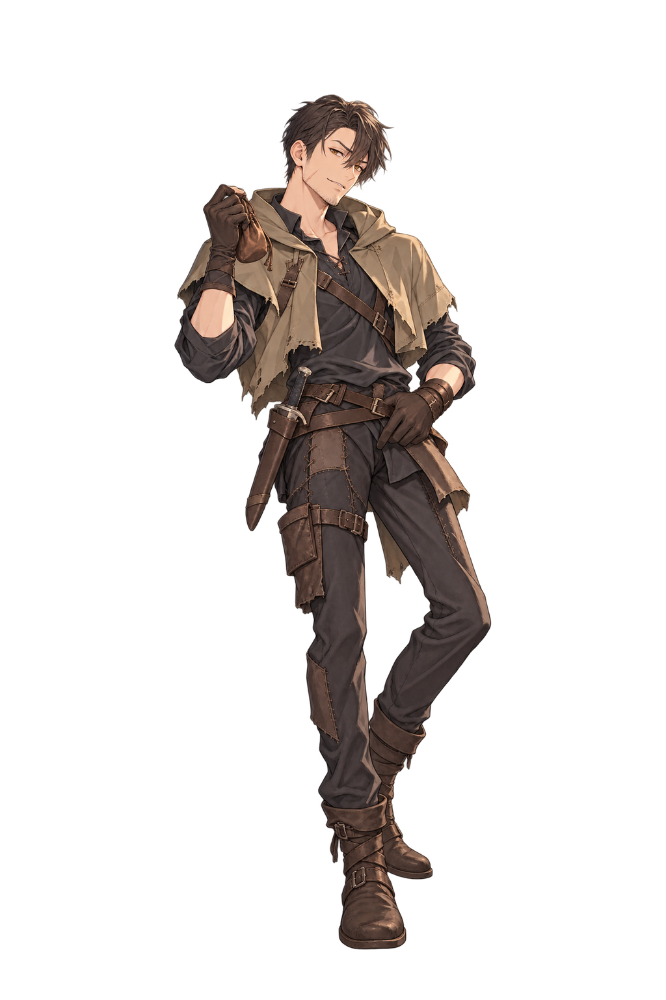전신 · 1024×1536원본 외형 지침175cm, 마르고 긴 체형, 오른쪽 턱의 작은 흉터와 좁은 입술.검갈색 머리를 짧게 자르고 앞머리를 비스듬히 내림, 짧은 수염.짙은 호박색, 한쪽 눈썹이 조금 높다.바랜 모래색 짧은 후드 외투, 먹색 튜닉, 가죽 조각으로 덧댄 바지와 낡은 신발.칼집에 든 평범한 짧은 칼 · 빈 작은 가죽 주머니후드를 내려 얼굴을 확인할 수 있게 한다. 특정 도적단·악마 문장이나 숨겨진 힘을 넣지 않는다.